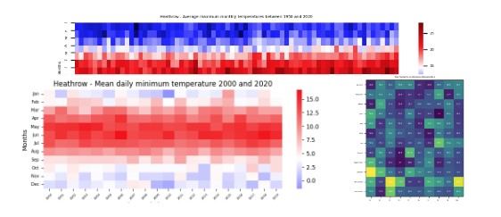

This project connects to a MET office API and creates an object with the retrieved data.

Pandas, MatPlotLib, Numpy, Seaborn
This project uses data downloaded from MET office into pandas to create graphs using Matplotlib, NumPy & Seaborn
Completed Projects on Github
Weather Forecast - This project connects to a MET office API and creates an object with the retrieved data.
Heatmaps to display Historical Weather Data - This project uses data downloaded from MET office into pandas to create graphs using Matplotlib, NumPy & Seaborn
Sentence Translation - This project takes user input, connects to the Azure API to identify the language of the input and translate into 5 given languages; spanish, dutch, french, german & english
Projects in Progress
Symptom Record - This project will allow users to input text data about symptoms which is time-stamped and stored, then will use a metaprompt as a prefix to send the data to an AI API in order to create a short summary of the data/ symptoms which can be given to a GP or VET in a brief 10-minute appointment.
Yahtzee - This project uses a score object to create a yahtze score which is then used within a game of yahtzee played with a computer at the command line.
I started coding during the pandemic and I have been coding small projects for fun with my 2 children.